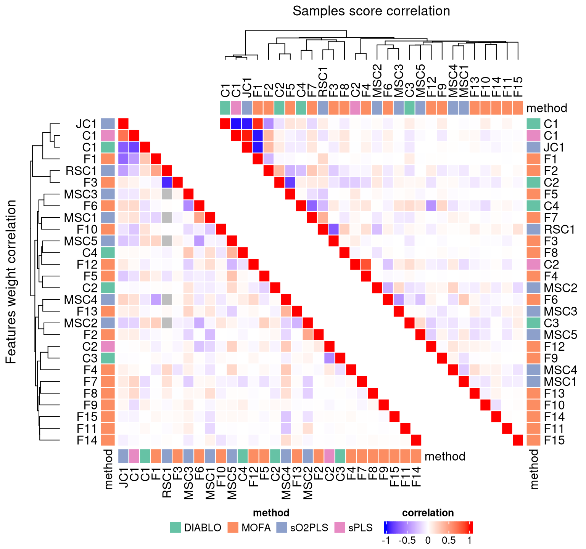
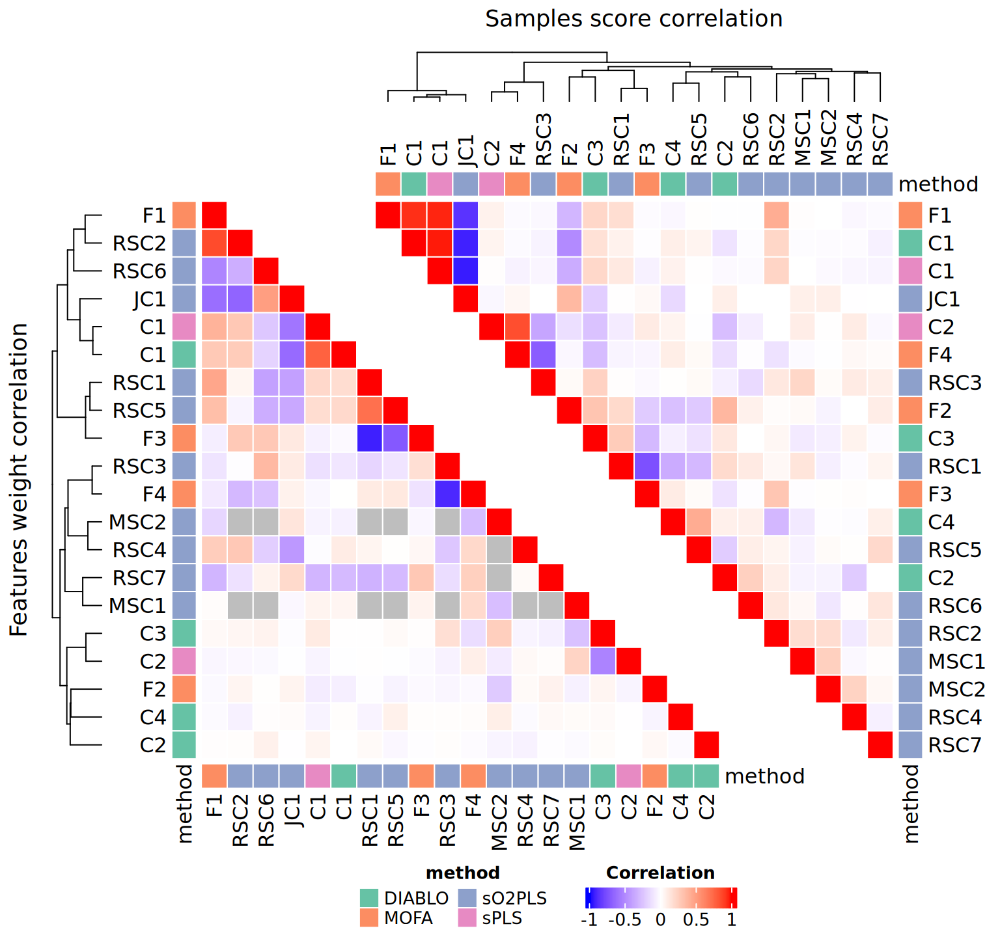
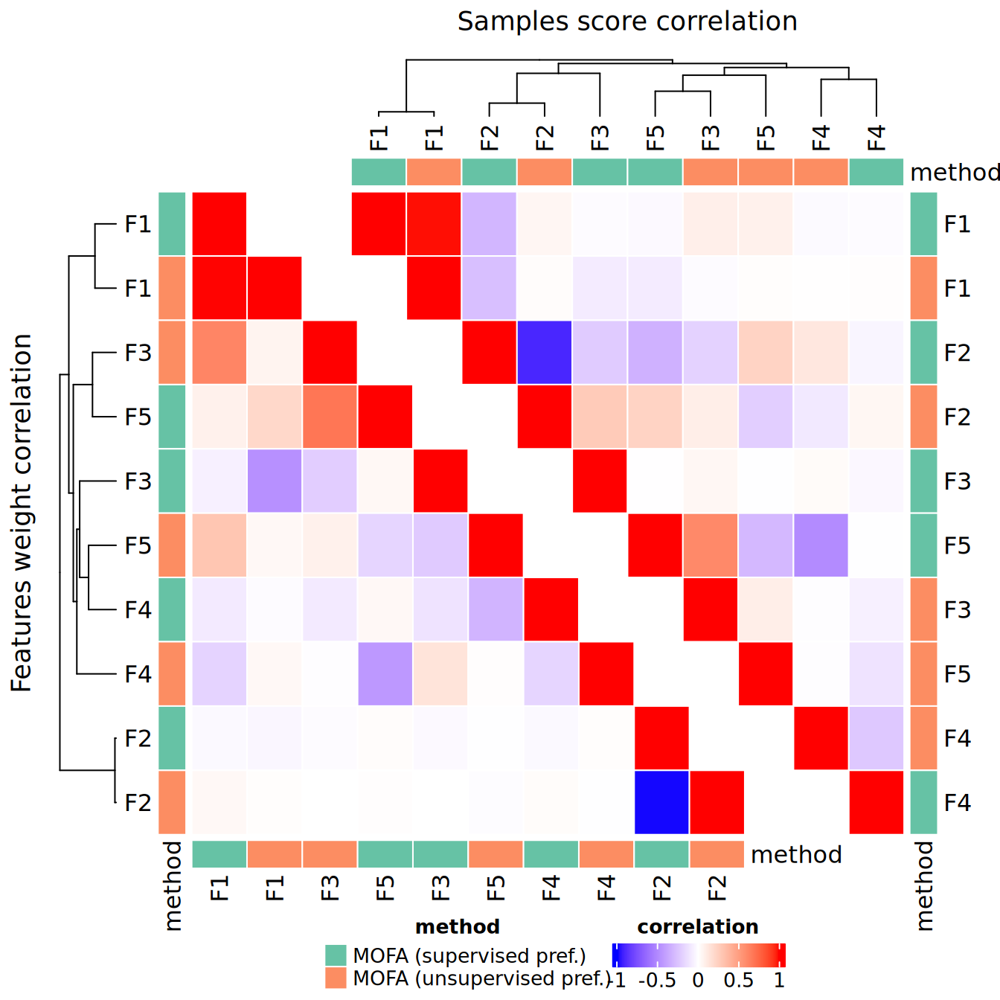
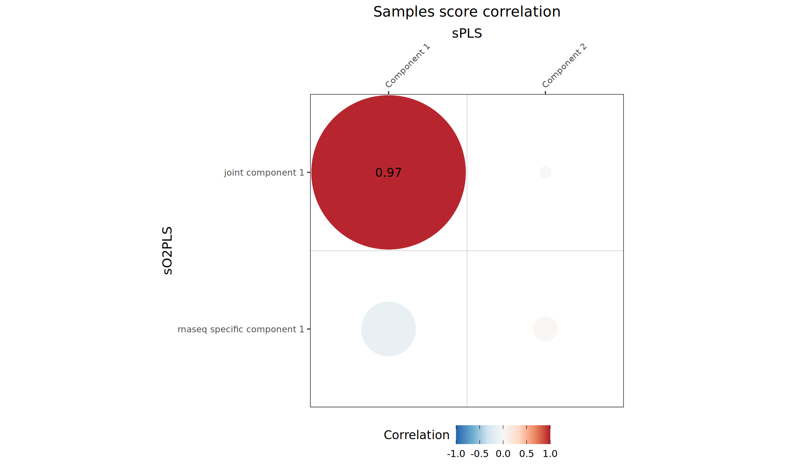
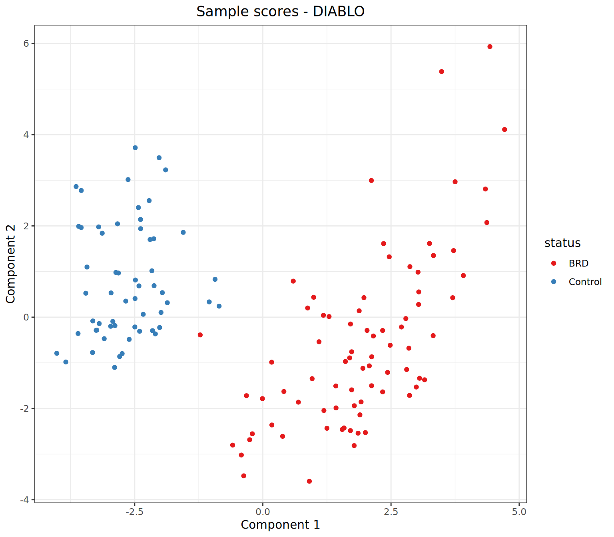
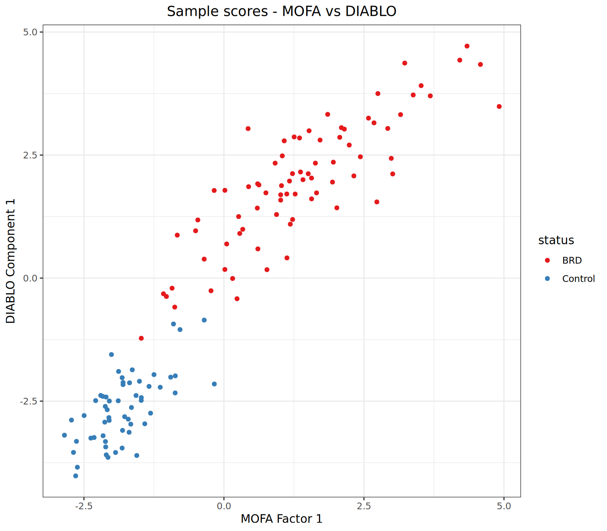
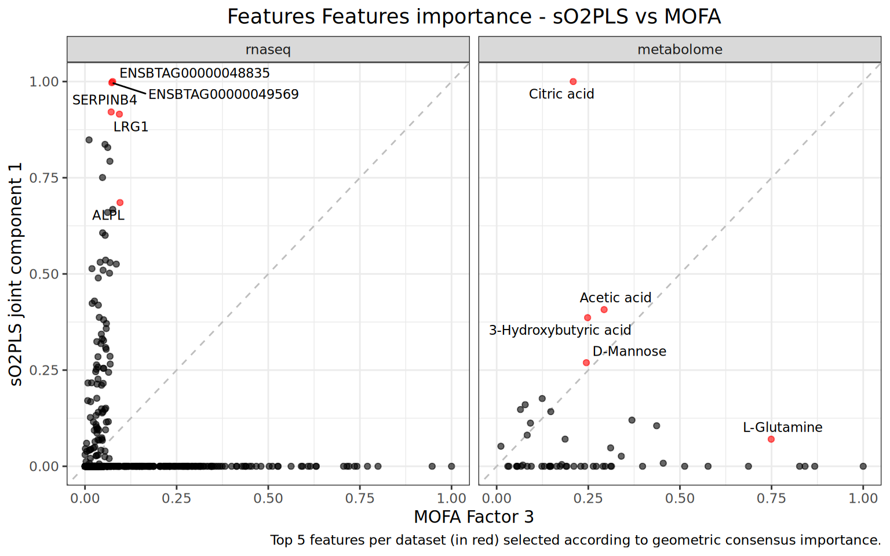
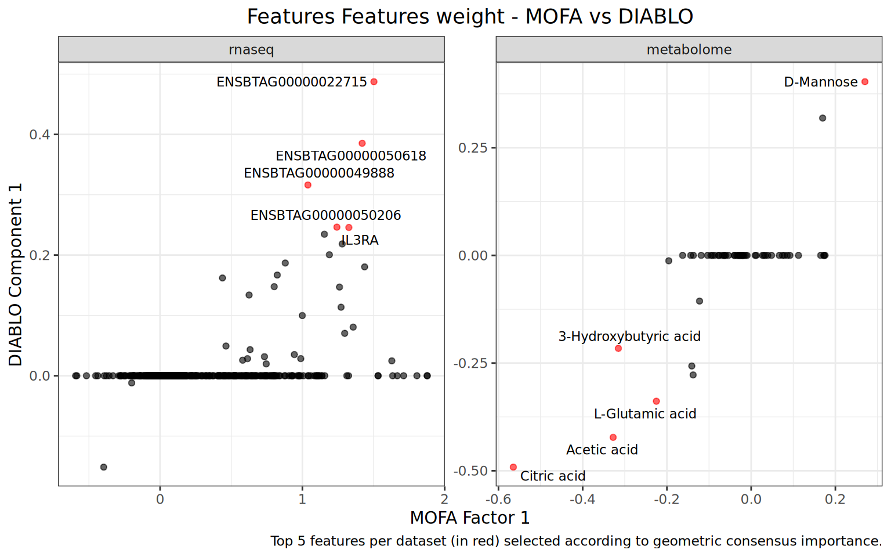
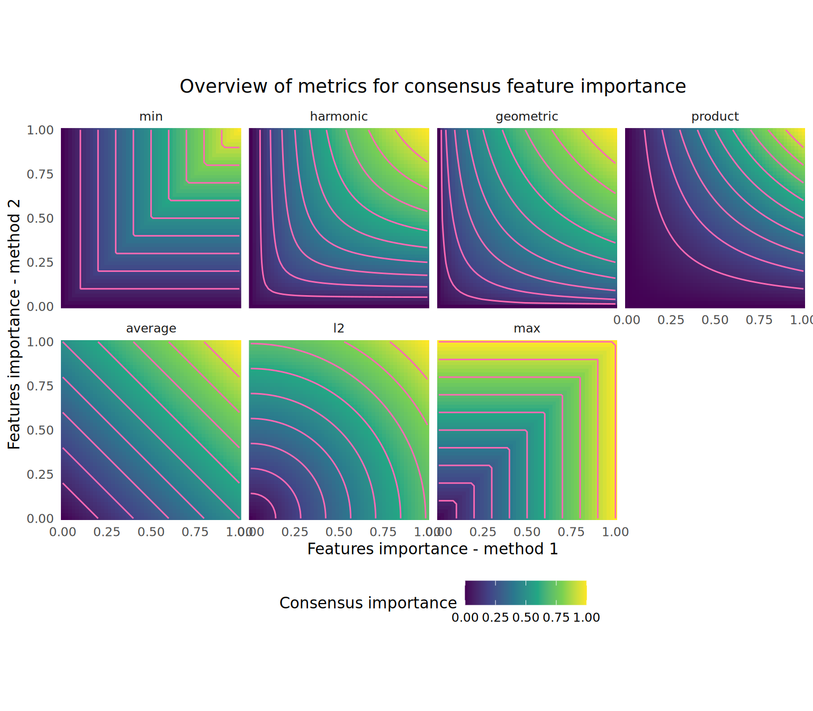
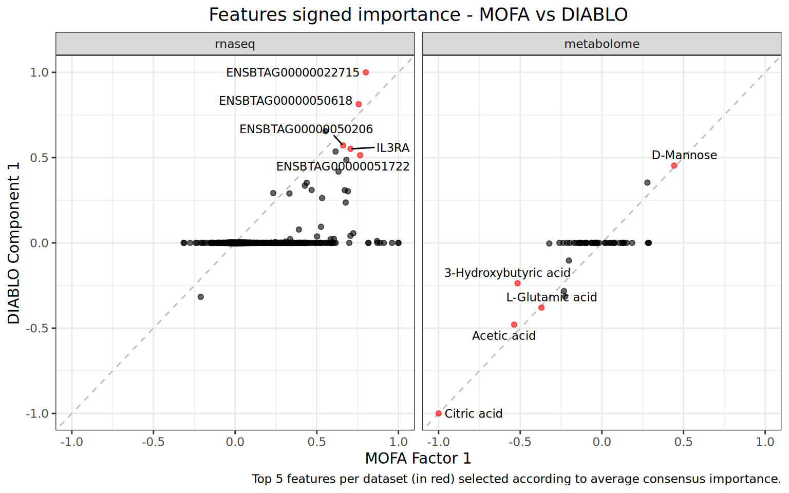

14 Comparing the integration results
As different integration methods use different statistical approaches and make different assumptions about the data, it can be very interesting to apply them to a same multi-omics dataset and compare the results. In this chapter, we will see how the moiraine package can be used to compare the results from different integration methods.
As a reminder, here is what the _targets.R script should look like so far:
_targets.R script
library(targets)
library(tarchetypes)
library(moiraine)
tar_option_set(
packages = c(
"moiraine",
"MOFA2",
"mixOmics",
"readr",
"tibble",
"tidyr",
"dplyr",
"ggplot2",
"patchwork"
)
)
list(
# Importing data ---------------------------------------------------------------
## Data import using a target factory
import_dataset_csv_factory(
files = c(
system.file("extdata/genomics_dataset.csv", package = "moiraine"),
system.file("extdata/transcriptomics_dataset.csv", package = "moiraine"),
system.file("extdata/metabolomics_dataset.csv", package = "moiraine")
),
col_ids = c("marker", "gene_id", "sample_id"),
features_as_rowss = c(TRUE, TRUE, FALSE),
target_name_suffixes = c("geno", "transcripto", "metabo")
),
## Genomics features metadata file
tar_target(
fmetadata_file_geno,
system.file("extdata/genomics_features_info.csv", package = "moiraine"),
format = "file"
),
## Genomics features metadata import
tar_target(
fmetadata_geno,
import_fmetadata_csv(
fmetadata_file_geno,
col_id = "marker",
col_types = c("chromosome" = "c")
)
),
## Metabolomics features metadata import
import_fmetadata_csv_factory(
files = c(
system.file("extdata/metabolomics_features_info.csv", package = "moiraine")
),
col_ids = c("feature_id"),
target_name_suffixes = c("metabo")
),
## Transcriptomics features metadata import
import_fmetadata_gff_factory(
files = system.file("extdata/bos_taurus_gene_model.gff3", package = "moiraine"),
feature_types = "genes",
add_fieldss = c("Name", "description"),
target_name_suffixes = "transcripto"
),
## Samples metadata import
import_smetadata_csv_factory(
files = system.file("extdata/samples_info.csv", package = "moiraine"),
col_ids = "animal_id",
target_name_suffixes = "all"
),
## Creating omics sets for each dataset
create_omics_set_factory(
datasets = c(data_geno, data_transcripto, data_metabo),
omics_types = c("genomics", "transcriptomics", "metabolomics"),
features_metadatas = c(fmetadata_geno, fmetadata_transcripto, fmetadata_metabo),
samples_metadatas = c(smetadata_all, smetadata_all, smetadata_all)
),
## Creating the MultiDataSet object
tar_target(
mo_set,
create_multiomics_set(
list(set_geno,
set_transcripto,
set_metabo)
)
),
# Inspecting the `MultiDataSet` object -----------------------------------------
## Creating a density plot for each dataset
tar_target(
density_plots,
plot_density_data(
mo_set,
combined = FALSE,
scales = "free"
)
),
## Plotting the relationship between features mean and standard deviation
## for each dataset
tar_target(
mean_sd_plots,
plot_meansd_data(mo_set)
),
## Assessing missing values
tar_target(
n_missing_values,
check_missing_values(mo_set)
),
# Modifying the `MultiDataSet` object ------------------------------------------
## RNAseq differential expression results file
tar_target(
rnaseq_de_res_file,
system.file(
"extdata/transcriptomics_de_results.csv",
package = "moiraine"
),
format = "file"
),
## Reading the RNAseq differential expression results
tar_target(
rnaseq_de_res_df,
read_csv(rnaseq_de_res_file) |>
rename(feature_id = gene_id) |>
mutate(dataset = "rnaseq")
),
## Adding the differential expression results to the MultiDataSet object
tar_target(
mo_set_de,
add_features_metadata(mo_set, rnaseq_de_res_df)
),
# Data pre-processing ----------------------------------------------------------
## Applying transformations to the datasets
transformation_datasets_factory(
mo_set_de,
c("rnaseq" = "vst-deseq2",
"metabolome" = "logx"),
log_bases = 2,
pre_log_functions = zero_to_half_min,
transformed_data_name = "mo_set_transformed"
),
## Density plot for each transformed dataset
tar_target(
density_plots_transformed,
plot_density_data(
mo_set_transformed,
combined = FALSE,
scales = "free"
)
),
## Plotting the mean-SD trend for transformed each dataset
tar_target(
mean_sd_plots_transformed,
plot_meansd_data(mo_set_transformed)
),
## Summary table of the transformations applied
tar_target(
transformation_summary,
get_table_transformations(transformations_runs_list)
),
## Running a PCA on each dataset
pca_complete_data_factory(
mo_set_transformed,
complete_data_name = "mo_set_complete"
),
## PCA screeplots
tar_target(
pca_screeplots,
plot_screeplot_pca(pca_runs_list)
),
## PCA sample plots
tar_target(
pca_sample_plots,
plot_samples_coordinates_pca(
pca_runs_list,
datasets = "snps",
pcs = 1:3,
mo_data = mo_set_de,
colour_upper = "geno_comp_cluster",
shape_upper = "status",
colour_lower = "feedlot"
)
),
# Dataset pre-filtering --------------------------------------------------------
## Unsupervised feature selection based on MAD score
feature_preselection_mad_factory(
mo_set_complete,
to_keep_ns = c("snps" = 1000, "rnaseq" = 1000),
with_ties = TRUE,
filtered_set_target_name = "mo_presel_unsupervised"
),
## Diagnostic plot for MAD-based feature selection
tar_target(
preselection_mad_plot,
plot_feature_preselection_mad(individual_mad_values)
),
## Supervised feature selection based on bruising groups
feature_preselection_splsda_factory(
mo_set_complete,
group = "status",
to_keep_ns = c("snps" = 1000, "rnaseq" = 1000),
filtered_set_target_name = "mo_presel_supervised"
),
## Diagnostic plot for sPLS-DA based feature selection
tar_target(
preselection_splsda_plot,
plot_feature_preselection_splsda(individual_splsda_perf)
),
# Integration with sPLS --------------------------------------------------------
## Creating sPLS input
tar_target(
spls_input,
get_input_spls(
mo_presel_supervised,
mode = "canonical",
datasets = c("rnaseq", "metabolome")
)
),
## Initial PLS run with no feature selection and large number of components
tar_target(
spls_novarsel,
spls_run(
spls_input,
ncomp = 4
)
),
## Cross-validation for number of components
tar_target(
spls_perf_res,
mixOmics::perf(
spls_novarsel,
validation = "Mfold",
folds = 10,
nrepeat = 10,
cpus = 3
)
),
## Plotting cross-validation results (for number of components)
## Can try criterion = 'Q2.total', 'cor.tpred', 'cor.upred', 'RSS.tpred',
## 'RSS.upred' (but avoid 'RSS' and 'PRESS')
tar_target(
spls_perf_plot,
plot(spls_perf_res, criterion = "Q2.total")
),
## Selected value for ncomp
tar_target(
spls_optim_ncomp,
spls_get_optim_ncomp(spls_perf_res, min_ncomp = 2)
),
## Cross-validation for number of features to retain
tar_target(
spls_tune_res,
spls_tune(
spls_input,
ncomp = spls_optim_ncomp,
keepX = seq(10, 100, 10),
keepY = seq(10, 100, 10),
validation = "Mfold",
folds = 10,
nrepeat = 5,
measure = "cor",
cpus = 3
)
),
## Plotting cross-validation results (for number of features)
tar_target(
spls_tune_plot,
spls_plot_tune(spls_tune_res)
),
## Final sPLS run
tar_target(
spls_final_run,
spls_run(
spls_input,
ncomp = spls_optim_ncomp,
keepX = spls_tune_res$choice.keepX,
keepY = spls_tune_res$choice.keepY
)
),
# Integration with sO2PLS ------------------------------------------------------
## Creating sO2PLS input
tar_target(
omicspls_input,
get_input_omicspls(
mo_presel_supervised,
datasets = c("rnaseq", "metabolome")
)
),
## Adjusted cross-validation for number of components
tar_target(
so2pls_cv_adj,
so2pls_crossval_o2m_adjR2(
omicspls_input,
a = 1:5,
ax = seq(0, 10, by = 2),
ay = seq(0, 10, by = 2),
nr_folds = 10,
nr_cores = 6,
seed = 127
)
),
tar_target(
so2pls_cv_adj_res,
so2pls_get_optim_ncomp_adj(so2pls_cv_adj)
),
## Plotting adjusted cross-validation results
tar_target(
so2pls_cv_adj_plot,
so2pls_plot_cv_adj(so2pls_cv_adj)
),
## Standard cross-validation for number of components
tar_target(
so2pls_cv,
so2pls_crossval_o2m(
omicspls_input,
so2pls_cv_adj,
nr_folds = 10,
nr_cores = 6,
seed = 356
)
),
tar_target(
so2pls_cv_res,
so2pls_get_optim_ncomp(so2pls_cv)
),
## Plotting standard cross-validation results
tar_target(
so2pls_cv_plot,
so2pls_plot_cv(so2pls_cv)
),
## Cross-validation for sparsity parameters
tar_target(
so2pls_cv_sparsity,
so2pls_crossval_sparsity(
omicspls_input,
n = so2pls_cv_res["n"],
nx = so2pls_cv_res["nx"],
ny = so2pls_cv_res["ny"],
nr_folds = 10,
keepx_seq = c(seq(5, 30, 5), seq(40, 100, 10)),
keepy_seq = c(seq(5, 40, 5))
)
),
tar_target(
so2pls_cv_sparsity_res,
so2pls_get_optim_keep(so2pls_cv_sparsity)
),
## Plotting the results of the cross-validation for the number of features
## to retain from each dataset for the different joint components
tar_target(
so2pls_cv_sparsity_plot,
so2pls_plot_cv_sparsity(so2pls_cv_sparsity)
),
## Extracting sparsity results in table format
tar_target(
so2pls_cv_sparsity_table,
so2pls_print_cv_sparsity(so2pls_cv_sparsity_res)
),
## Final sO2PLS run
tar_target(
so2pls_final_run,
so2pls_o2m(
omicspls_input,
so2pls_cv_res,
so2pls_cv_sparsity_res
)
),
## Summary plot of percentage of variance explained
tar_target(
so2pls_summary_plot,
so2pls_plot_summary(so2pls_final_run)
),
## Screeplot
tar_target(
so2pls_screeplot,
so2pls_screeplot(so2pls_final_run)
),
## Comparison of samples score for joint components
tar_target(
so2pls_joint_components_comparison_plot,
so2pls_compare_samples_joint_components(
so2pls_final_run,
mo_data = mo_set_de,
colour_by = "status",
shape_by = "feedlot"
)
),
## Coefficient plot for joint components
tar_target(
so2pls_joint_components_coefficients_plot,
so2pls_plot_joint_components_coefficients(so2pls_final_run)
),
## Joint component samples score plot
tar_target(
so2pls_joint_components_samples_score_plot,
so2pls_plot_samples_joint_components(
so2pls_final_run,
mo_data = mo_set_de,
colour_upper = "status",
scale_colour_upper = scale_colour_brewer(palette = "Paired"),
shape_upper = "feedlot"
) +
theme(legend.box = "vertical")
),
## Specific components samples score plot
tar_target(
so2pls_specific_components_samples_score_plot,
so2pls_plot_samples_specific_components(
so2pls_final_run,
mo_data = mo_set_de,
colour_upper = "feedlot",
scale_colour_upper = scale_colour_brewer(palette = "Paired"),
colour_lower = "rnaseq_batch",
shape_upper = "gender"
) |>
map(\(x) x + theme(legend.box = "vertical"))
),
# Integration with MOFA --------------------------------------------------------
## Creating MOFA input
tar_target(
mofa_input,
get_input_mofa(
mo_presel_supervised,
options_list = list(
data_options = list(scale_views = TRUE),
model_options = list(likelihoods = c(
"snps" = "poisson",
"rnaseq" = "gaussian",
"metabolome" = "gaussian")
),
training_options = list(seed = 43)
),
only_common_samples = FALSE
)
),
## Overview plot of the samples in each dataset
tar_target(
mofa_input_plot,
plot_data_overview(mofa_input)
),
## Training MOFA model
tar_target(
mofa_trained,
run_mofa(
mofa_input,
save_data = TRUE,
use_basilisk = TRUE
)
),
## Formatting MOFA output
tar_target(
mofa_output,
get_output(mofa_trained)
),
## Plots of variance explained
tar_target(
mofa_var_explained_plot,
plot_variance_explained(
mofa_trained,
x = "view", ## datasets on the x-axis
y = "factor" ## factors on the y-axis
)
),
tar_target(
mofa_total_var_explained_plot,
plot_variance_explained(
mofa_trained,
x = "view",
y = "factor",
plot_total = TRUE
)[[2]]
),
## Plot of factors correlation with covariates
tar_target(
mofa_factors_covariates_cor_plot,
mofa_plot_cor_covariates(mofa_trained)
),
# Integration with DIABLO ------------------------------------------------------
## Creating the DIABLO input
tar_target(
diablo_input,
get_input_mixomics_supervised(
mo_presel_supervised,
group = "status"
)
),
## Running sPLS on each dataset to construct the design matrix
diablo_pairwise_pls_factory(diablo_input),
## Initial DIABLO run with no feature selection and large number of components
tar_target(
diablo_novarsel,
diablo_run(
diablo_input,
diablo_design_matrix,
ncomp = 7
)
),
## Cross-validation for number of components
tar_target(
diablo_perf_res,
mixOmics::perf(
diablo_novarsel,
validation = "Mfold",
folds = 10,
nrepeat = 10,
cpus = 3
)
),
## Plotting cross-validation results (for number of components)
tar_target(
diablo_perf_plot,
diablo_plot_perf(diablo_perf_res)
),
## Selected value for ncomp
tar_target(
diablo_optim_ncomp,
diablo_get_optim_ncomp(diablo_perf_res)
),
## Cross-validation for number of features to retain
tar_target(
diablo_tune_res,
diablo_tune(
diablo_input,
diablo_design_matrix,
ncomp = diablo_optim_ncomp,
validation = "Mfold",
folds = 10,
nrepeat = 5,
dist = "centroids.dist",
cpus = 3
)
),
## Plotting cross-validation results (for number of features)
tar_target(
diablo_tune_plot,
diablo_plot_tune(diablo_tune_res)
),
## Final DIABLO run
tar_target(
diablo_final_run,
diablo_run(
diablo_input,
diablo_design_matrix,
ncomp = diablo_optim_ncomp,
keepX = diablo_tune_res$choice.keepX
)
),
# Interpreting the integration results -----------------------------------------
## Generating standardised output
tar_target(
spls_output,
get_output(spls_final_run)
),
## Percentage of variance explained
tar_target(
spls_plot_variance_explained,
plot_variance_explained(spls_output)
),
## Samples score matrix plot
tar_target(
spls_samples_scores_plot,
plot_samples_score(
spls_output,
mo_data = mo_set_complete,
colour_upper = "status",
scale_colour_upper = palette_status,
shape_upper = "gender",
colour_lower = "feedlot",
scale_colour_lower = palette_feedlot
) +
theme(legend.box = "vertical")
),
## Distribution of features weight
tar_target(
spls_features_weight_distribution,
plot_features_weight_distr(spls_output)
),
## Plot of top contributing features
tar_target(
spls_top_features_plot,
plot_top_features(
spls_output,
mo_data = mo_set_complete,
label_cols = list(
"rnaseq" = "Name",
"metabolome" = "name"
)
)
),
## Table of selected features
tar_target(
spls_selected_features,
get_selected_features(spls_output)
),
## Generating standardised output
tar_target(
so2pls_output,
get_output(so2pls_final_run)
),
## Percentage of variance explained
tar_target(
so2pls_plot_variance_explained,
plot_variance_explained(so2pls_output, ncol = 1) +
theme(axis.text.x = element_text(size = 9, angle = 30, hjust = 1))
),
## Samples score matrix plot
tar_target(
so2pls_samples_scores_plot,
plot_samples_score(
so2pls_output,
latent_dimensions = "joint component 1",
mo_data = mo_set_complete,
colour_upper = "status",
scale_colour_upper = palette_status,
shape_upper = "gender"
)
),
## Distribution of features weight
tar_target(
so2pls_features_weight_distribution,
plot_features_weight_distr(so2pls_output) +
plot_layout(ncol = 2)
),
## Plot of top contributing features
tar_target(
so2pls_top_features_plot,
plot_top_features(
so2pls_output,
mo_data = mo_set_complete,
label_cols = list(
"rnaseq" = "Name",
"metabolome" = "name"
)
)
),
## Table of selected features
tar_target(
so2pls_selected_features,
get_selected_features(
so2pls_output,
latent_dimensions = "joint component 1"
)
),
## Generating standardised output
tar_target(
mofa_output,
get_output(mofa_trained)
),
## Percentage of variance explained
tar_target(
mofa_plot_variance_explained,
plot_variance_explained(mofa_output, ncol = 1) +
theme(axis.text.x = element_text(size = 9, angle = 30, hjust = 1))
),
## Samples score matrix plot
tar_target(
mofa_samples_scores_plot,
plot_samples_score(
mofa_output,
latent_dimensions = paste("Factor", 1:4),
mo_data = mo_set_complete,
colour_upper = "status",
scale_colour_upper = palette_status,
shape_upper = "gender",
colour_lower = "geno_comp_cluster",
scale_colour_lower = palette_geno_comp
) +
theme(legend.box = "vertical")
),
## Distribution of features weight
tar_target(
mofa_features_weight_distribution,
plot_features_weight_distr(
mofa_output,
latent_dimensions = paste("Factor", 1:4)
) +
plot_layout(ncol = 1)
),
## Plot of top contributing features
tar_target(
mofa_top_features_plot,
plot_top_features(
mofa_output,
mo_data = mo_set_complete,
label_cols = list(
"rnaseq" = "Name",
"metabolome" = "name"
),
latent_dimensions = paste("Factor", 1:2)
)
),
## Table of top contributing features
tar_target(
mofa_top_features,
get_top_features(
mofa_output,
min_importance = 0.8,
mo_data = mo_set_complete
)
),
## Generating standardised output
tar_target(
diablo_output,
get_output(diablo_final_run)
),
## Percentage of variance explained
tar_target(
diablo_plot_variance_explained,
plot_variance_explained(diablo_output, ncol = 2)
),
## Samples score matrix plot
tar_target(
diablo_samples_scores_plot,
plot_samples_score(
diablo_output,
mo_data = mo_set_complete,
colour_upper = "status",
scale_colour_upper = palette_status,
shape_upper = "gender",
colour_lower = "rnaseq_batch",
scale_colour_lower = palette_rnaseq_batch
) +
theme(legend.box = "vertical")
),
## Distribution of features weight
tar_target(
diablo_features_weight_distribution,
plot_features_weight_distr(
diablo_output
) +
plot_layout(ncol = 1)
),
## Plot of top contributing features
tar_target(
diablo_top_features_plot,
plot_top_features(
diablo_output,
mo_data = mo_set_complete,
label_cols = list(
"rnaseq" = "Name",
"metabolome" = "name"
),
latent_dimensions = paste("Component", 1:2)
)
),
## Table of top contributing features
tar_target(
diablo_selected_features,
get_selected_features(diablo_output)
),
# Evaluating the integration results -------------------------------------------
## Evaluating DIABLO selected features against single-omics results
tar_target(
diablo_selected_vs_singleomics_table,
evaluate_feature_selection_table(
diablo_output,
mo_data = mo_set_complete,
col_names = list(
"snps" = "qtl_type",
"rnaseq" = "de_signif",
"metabolome" = "de_signif"
)
)
),
## Plotting DIABLO features weight against single-omics results
tar_target(
diablo_features_weight_vs_singleomics_plot,
plot_features_weight_covariate(
diablo_output,
mo_data = mo_set_complete,
covariate = list(
"snps" = "qtl_type",
"rnaseq" = "de_status",
"metabolome" = "de_status"
),
remove_null_weight = TRUE
)
),
## Genes GO annotation file
tar_target(
rnaseq_go_terms_file,
system.file(
"extdata/transcriptomics_go_annotation.csv",
package = "moiraine"
),
format = "file"
),
## Genes GO annotation data-frame
tar_target(
rnaseq_go_df,
read_csv(rnaseq_go_terms_file) |>
filter(go_domain == "Biological process")
),
## GO term sets
tar_target(
go_sets,
make_feature_sets_from_df(
rnaseq_go_df,
col_id = "gene_id",
col_set = "go_id"
)
),
## Filtering GO term sets against measured features
tar_target(
go_sets_filtered,
reduce_feature_sets_data(go_sets, mo_set_complete)
),
## Checking genes GO term sets against datasets
tar_target(
go_sets_check,
check_feature_sets(
go_sets_filtered,
mo_set_complete,
datasets = "rnaseq"
)
),
## Table of information about GO terms
tar_target(
go_sets_info,
rnaseq_go_df |>
dplyr::select(go_id, go_name) |>
dplyr::distinct()
),
## MOFA latent components enrichment analysis
tar_target(
mofa_enrichment_results,
evaluate_method_enrichment(
mofa_output,
go_sets_filtered,
datasets = "rnaseq",
latent_dimensions = paste("Factor", 1:3),
use_abs = TRUE,
min_set_size = 10,
add_missing_features = TRUE,
mo_data = mo_set_complete,
sets_info_df = go_sets_info,
col_set = "go_id"
)
),
## Plotting features weight for GO term 'GO:0031424'
tar_target(
mofa_enrichment_go0031424_plot,
plot_features_weight_set(
mofa_output,
go_sets_filtered[["GO:0031424"]],
set_name = "GO:0031424 (keratinization)",
features_metric = "importance",
datasets = "rnaseq",
latent_dimensions = paste("Factor", c(1, 3)),
point_alpha = 0.2
)
),
## Assessing DIABLO samples clustering
tar_target(
diablo_silhouette,
compute_samples_silhouette(
diablo_output,
mo_set_complete,
"status"
)
)
)14.1 Introduction
As explained in Section 12.1, the integration tools considered in moiraine all perform dimension reduction of the omics datasets, and therefore all construct latent dimensions which can be described in terms of their features weight and their samples score. Therefore, we can compare the results of different integration methods in terms of their latent dimensions, by comparing either the latent dimensions’ samples score, or their features weight. When comparing the samples score, we are answering the question: are the different methods capturing the same trends from the datasets? By comparing features weight, we are instead answering a slightly different question: are the different methods highlighting similar sets of features as driving variation in the datasets? Of course, these comparisons are related, as two latent dimensions that identify very different trends in the data will most likely give high importance to very different sets of features.
Note that, although this chapter mainly considers a comparison of different integration methods, we could also compare the results of a same integration but with different pre-processing options (e.g. to assess the impact of datasets normalisation or pre-filtering on the integration results). To illustrate this, we will run a second MOFA analysis, but this time using the datasets that have been pre-filtered to retain the most variable features (Section 7.3.1), as opposed to the supervised pre-filtering results that we have used in the main analysis (Section 7.3.2).
list(
## Creating the input object for the MOFA pipeline
## using the unsupervised preselection results
tar_target(
mofa_unsupervised_input,
get_input_mofa(
mo_presel_unsupervised,
options_list = list(
data_options = list(scale_views = TRUE),
model_options = list(
likelihoods = c(
"snps" = "poisson",
"rnaseq" = "gaussian",
"metabolome" = "gaussian")
),
training_options = list(seed = 72)
),
only_common_samples = FALSE
)
),
## Training the model with the MOFA algorithm
tar_target(
mofa_unsupervised_trained,
run_mofa(
mofa_unsupervised_input,
save_data = TRUE,
use_basilisk = TRUE
)
),
## Formatting MOFA output
tar_target(
mofa_unsupervised_output,
get_output(mofa_unsupervised_trained)
)
)14.2 Extracting integration results
The first step in order to compare the results from different methods is to convert them to a standardised format with the get_output() function, which we did in Chapter 12. The function returns an output_dimension_reduction object which contains information about the latent dimensions’ features weight and samples score, as well as a summary of the percentage of variance explained for each dataset. The output_dimension_reduction object created also has an attribute called method, which contains the name of the integration method used:
To facilitate comparisons, we will combine these objects into a list:
tar_target(
output_list,
list(spls_output, so2pls_output, mofa_output, diablo_output)
)This list will be the input of most of the functions that we will showcase in this chapter.
tar_load(output_list)You can notice that we didn’t give any name to the elements of the list that we just created. When comparing results from different integration methods, the comparison functions implemented in moiraine automatically extract the name of the method from each object (as shown above), and use this as labels in the plots. However, when we want to compare several results from a same integration method, we need to give unique names to the different elements in the output list, e.g.:
tar_target(
output_list_mofa,
list(
"MOFA (supervised pref.)" = mofa_output,
"MOFA (unsupervised pref.)" = mofa_unsupervised_output
)
)tar_load(output_list_mofa)14.3 Clustered correlation heatmaps
We can visualise the correlation between the samples score and features weight of the different latent dimensions constructed by the integration methods as a heatmap, using the comparison_heatmap_corr() function. The main input parameter of the function is a list of output_dimension_reduction objects, which we constructed in the previous section:
comparison_heatmap_corr(output_list, legend_ncol = 4)
The function generates two half-heatmaps. The heatmap on the left is a visualisation of the correlation between the features weight of the different latent dimensions; the one on the right shows the correlation between their samples score. Since correlation matrices are symmetric, only one triangle of each matrix is represented. The rows and columns of the heatmaps each correspond to one of the latent dimensions generated by one of the integration methods. Their name is abbreviated (C stands for component, F for Factor, JC for joint component, RSC for rnaseq-specific component and MSC for metabolome-specific component). The method through which each latent dimension was generated is indicated next to its name as a coloured annotation. In each heatmap, the rows and columns have been ordered according to a clustering performed on the correlation matrix, so that the latent dimensions most similar (in terms of samples score or features weight) are next to each other.
By default, the function represents all of the latent dimensions generated by each method, but the latent_dimensions parameter allows us to select only the ones we are interested in comparing. It accepts a named list, where each element gives for an integration method the latent dimensions to use. The names of the list must correspond to methods name. For example, we will look at all latent dimensions from sPLS and DIABLO, but restrict to only the first four MOFA factors, and only the joint component and first two dataset-specific components for sO2PLS:
comparison_heatmap_corr(
output_list,
latent_dimensions = list(
"sO2PLS" = c(
"joint component 1",
paste("metabolome specific component", 1:2),
"rnaseq specific component 1"
),
"MOFA" = paste("Factor", 1:4)
)
)
From the heatmaps, we can see that some latent dimensions constructed by the different methods seem to capture similar trends in the data. For example, MOFA factor 1, sPLS component 1, DIABLO component 1 and sO2PLS joint component 1 are all strongly correlated in terms of their samples score. Their correlation in terms of features weight is a bit lower, which is due to the fact that some methods perform features selection, therefore all non-selected features are given a weight of 0. Note that the sign of the correlation is interesting but not very important. We can also see some latent dimensions that seem correlated with respect to one metric but not the other. For example, there is a strong correlation between the samples score of MOFA factor 4 and sPLS component 2, but this is not reflected in their features weight. Again, that can be because one method performs latent selection and not the other. On the other hand, the correlation between sPLS component 3 and DIABLO component 2 is stronger when looking at their features weight than at their samples score.
When using the function to compare the results of the two MOFA runs, the names that we gave to the list of output will be used as method name, and these are the names to use in order to select some latent dimensions of interest. For example:
comparison_heatmap_corr(
output_list_mofa,
latent_dimensions = list(
"MOFA (supervised pref.)" = paste0("Factor ", 1:5),
"MOFA (unsupervised pref.)" = paste0("Factor ", 1:5)
)
)
14.4 A note about missing features
Typically, when comparing the output of different integration methods, we assume that the same input data was used for each method. However, when we are instead comparing the impact of data pre-processing on the integration results, it is possible that not all features are present in the input data for each of the methods. This is for example the case when assessing the impact of different prefiltering settings (e.g. supervised vs unsupervised) on the results of a particular integration method. It is also the case if we are comparing the integration results when using different subset of omics data as input: in our example, both DIABLO and MOFA were used on the three omics datasets (genomics, transcriptomics and metabolomics), while sPLS and sO2PLS were run on the transcriptomics and metabolomics datasets only. If that is the case, some features will have no weight in some of the results we are comparing (as they are not in the input data analysed by the integration method). There are two approaches to deal with that:
Approach 1: remove these features from the comparison. The correlation between the features weight of any two latent dimensions will only be calculated using the features that are assigned a weight by both latent dimensions. This is the default approach used by
comparison_heatmap_corr()and other comparison functions.Approach 2: the features that are assigned a weight by some methods but not others are retained for the comparison, and the missing weights are replaced with zero values.
The problem with approach 2 is that it might artificially decrease the computed correlation coefficients, which is why approach 1 is the default in this package. However, approach 2 may reveal interesting patterns and therefore was also implemented.
In comparison_heatmap_corr() and other comparison functions where relevant, the choice between these two approaches is controlled by the include_missing_features parameter. The first approach is selected with include_missing_features = FALSE, while the second approach is selected with include_missing_features = TRUE.
Note that the first approach does not remove features that were discarded as a result of feature selection by one of the integration method, but only features that were not in the input data for the integration method. For example, sO2PLS performs feature selection for the joint components, and as a consequence the features that are not selected as assigned a weight of 0. These features are not impacted by the choice of approach.
14.5 Correlation matrices
We can obtain the correlation coefficients displayed in the heatmaps with the get_features_weight_correlation() and get_samples_score_correlation() functions:
get_samples_score_correlation(output_list)[1:5, 1:5]
#> sPLS___Component 1 sPLS___Component 2
#> sPLS___Component 1 1.000000000 0.004845557
#> sPLS___Component 2 0.004845557 1.000000000
#> sO2PLS___joint component 1 0.973652291 -0.006320588
#> sO2PLS___rnaseq specific component 1 -0.123298596 0.025496756
#> sO2PLS___metabolome specific component 1 0.033930444 -0.148278174
#> sO2PLS___joint component 1
#> sPLS___Component 1 0.973652291
#> sPLS___Component 2 -0.006320588
#> sO2PLS___joint component 1 1.000000000
#> sO2PLS___rnaseq specific component 1 -0.007293233
#> sO2PLS___metabolome specific component 1 -0.003995068
#> sO2PLS___rnaseq specific component 1
#> sPLS___Component 1 -0.123298596
#> sPLS___Component 2 0.025496756
#> sO2PLS___joint component 1 -0.007293233
#> sO2PLS___rnaseq specific component 1 1.000000000
#> sO2PLS___metabolome specific component 1 0.018259608
#> sO2PLS___metabolome specific component 1
#> sPLS___Component 1 0.033930444
#> sPLS___Component 2 -0.148278174
#> sO2PLS___joint component 1 -0.003995068
#> sO2PLS___rnaseq specific component 1 0.018259608
#> sO2PLS___metabolome specific component 1 1.000000000
get_features_weight_correlation(output_list)[1:5, 1:5]
#> sPLS___Component 1 sPLS___Component 2
#> sPLS___Component 1 1.000000000 0.008381676
#> sPLS___Component 2 0.008381676 1.000000000
#> sO2PLS___joint component 1 0.702008542 -0.005438028
#> sO2PLS___rnaseq specific component 1 -0.200398661 0.012947768
#> sO2PLS___metabolome specific component 1 0.151077963 -0.180756532
#> sO2PLS___joint component 1
#> sPLS___Component 1 0.702008542
#> sPLS___Component 2 -0.005438028
#> sO2PLS___joint component 1 1.000000000
#> sO2PLS___rnaseq specific component 1 -0.418570009
#> sO2PLS___metabolome specific component 1 0.113863838
#> sO2PLS___rnaseq specific component 1
#> sPLS___Component 1 -0.20039866
#> sPLS___Component 2 0.01294777
#> sO2PLS___joint component 1 -0.41857001
#> sO2PLS___rnaseq specific component 1 1.00000000
#> sO2PLS___metabolome specific component 1 NA
#> sO2PLS___metabolome specific component 1
#> sPLS___Component 1 0.1510780
#> sPLS___Component 2 -0.1807565
#> sO2PLS___joint component 1 0.1138638
#> sO2PLS___rnaseq specific component 1 NA
#> sO2PLS___metabolome specific component 1 1.0000000Note that the formatting of the row and column names is designed for easier handling in the various plotting functions.
14.6 Pairwise comparisons
While the comparison_heatmap_corr() function can handle any number of methods to compare (in our example it was 4), the heatmap can become difficult to interpret. As an alternative option, it is possible to visualise the correlation between the latent dimensions of any two methods. This is what the function comparison_plot_correlation() is for. It also takes as input a list of methods’ output, but the list must only contain two elements. For example, we will compare the results of sPLS and sO2PLS:
comparison_plot_correlation(output_list[2:1])
As with comparison_heatmap_corr(), the function displays the correlation between the latent dimensions’ samples score on the left, and between their features weight on the right, but using correlation plots rather than heatmaps. By default, only correlation coefficients above 0.2 have their value displayed (for better clarity), but this can be customised through the min_show_corr argument.
By default, the function plots both samples score correlations and features weight correlation, but it is possible to display only one of them by setting the by argument to either samples or features. In addition, as for the heatmap plotting function, it is possible to focus on certain latent dimensions by passing a named list of latent dimensions name to the latent_dimensions argument:
comparison_plot_correlation(
output_list[2:1],
by = "samples",
latent_dimensions = list(
"sO2PLS" = c("joint component 1", "rnaseq specific component 1")
)
)
14.7 Comparing samples score
The correlation plots shown above provide a useful summary of the similarity between the latent dimensions constructed by different integration methods. We can then investigate further how any two latent dimensions (from two different integration methods) are related. One way to do so is to compare their samples score in a scatterplot. In Section 12.4.2, the plot_samples_score_pair() function has been used to display the samples score of two latent dimensions from the result of an integration method, e.g.:
tar_load(mo_set_complete)
plot_samples_score_pair(
diablo_output,
c("Component 1", "Component 2"),
mo_data = mo_set_complete,
colour_by = "status"
) +
scale_colour_brewer(palette = "Set1")
This function can also be used to compare the samples score of two latent dimensions from two integration different methods. This is done by passing to the function a list of length 2 containing the output of two different methods. The name of the latent dimensions to compare are provided as a named list, where each name corresponds to either the name of the method (if the input list is not named) or the name of the element in the input list. So for example, to compare the first latent dimension of MOFA and DIABLO:
plot_samples_score_pair(
output_list[3:4],
list("MOFA" = "Factor 1", "DIABLO" = "Component 1"),
mo_data = mo_set_complete,
colour_by = "status"
) +
scale_colour_brewer(palette = "Set1")
#> Warning: Removed 9 rows containing missing values (`geom_point()`).
We can see that the samples score of the two latent dimensions are strongly correlated, showing that the two latent dimensions capture a similar trend in the data.
14.8 Comparing features weight
In a similar way, we can compare the features importance score of two latent dimensions from two different integration methods. In Section 12.5.2, the plot_features_weight_pair() function has been used to display the features weight or importance score of two latent dimensions from the result of an integration method, e.g.:
plot_features_weight_pair(
diablo_output,
c("Component 1", "Component 2"),
mo_data = mo_set_complete,
label_cols = list(
"rnaseq" = "Name",
"metabolome" = "name"
)
)
This function can also be used to compare the features weight of two latent dimensions from two different integration methods. This is done by passing to the function a list of length 2 containing the output of two different methods. The name of the latent dimensions to compare are provided as a named list, where each name corresponds to either the name of the method (if the input list is not named) or the name of the element in the input list. We will again compare MOFA factor 1 and DIABLO component 1:
plot_features_weight_pair(
output_list[3:4],
list("MOFA" = "Factor 1", "DIABLO" = "Component 1"),
mo_data = mo_set_complete,
features_metric = "importance",
label_cols = list(
"rnaseq" = "Name",
"metabolome" = "name"
)
)
We can see that while MOFA and DIABLO identify the same metabolites as being the most important to separate healthy and infected animals, the genomic markers and genes that are given the highest importance score by MOFA are not selected with DIABLO.
By default, the function plots the features signed importance (i.e. importance score to which the sign of their weight was added), but in this case it makes sense to look at their (non-signed) importance score, which we have done by setting the features_metric argument to 'importance'. Note that we can also compare their raw weight, by setting features_metric to 'weight'. If that is the case, keep in mind that the weights from different latent dimensions live on different scales, so the raw values are not directly comparable (but the features ranking and weight sign are). We can also focus on a subset of datasets by passing their name to the datasets argument:
plot_features_weight_pair(
output_list[3:4],
list("MOFA" = "Factor 1", "DIABLO" = "Component 1"),
features_metric = "weight",
datasets = c("rnaseq", "metabolome"),
mo_data = mo_set_complete,
label_cols = list(
"rnaseq" = "Name",
"metabolome" = "name"
)
)
By default, the plot_features_weight_pair() function uses the geometric consensus importance metric (more details in the next section) to highlight the 5 features identified as most important by both methods. Both the number of features highlighted and the metric used can be controlled, through the top_n and metric arguments, respectively. In the following section, we will expand on the concept of consensus importance and the different metrics available.
14.9 Feature consensus importance
14.9.1 Possible metrics
When comparing the results of several integration methods, we might find that several methods uncover similar trends in the datasets, through the latent dimensions they construct. For these latent dimensions, it is interesting to assess which features are consistently selected by the different methods as driving these trends. We can do so by computing the consensus importance score of the features, which summarises the importance given to the features by the different integration methods. Different metrics can be used to compute the consensus importance score. With \(s_j^i\) denoting the importance score of feature \(j\) from method \(i\), \(i = 1 \dots n_i\) (more specifically, from one latent dimension constructed by the integration method), the following metrics are implemented in the package:
Geometric mean (
geometric): calculated as \(CI_j^G = \exp\left(\frac{1}{n_i} \sum\limits_i \log(s_j^i)\right)\)Harmonic mean (
harmonic): calculated as \(CI_j^H = \frac{1}{\frac{1}{n_i}\sum\limits_i\frac{1}{s_j^i}}\)L2 norm (
l2): calculated as \(CI_j^{L2} = \sqrt{\sum\limits_i (s_j^i)^2}\)Average (
average): calculated as \(CI_j^A = \frac{1}{n_i} \sum\limits_i s_j^i\)Product (
product): calculated as \(CI_j^P = \prod\limits_i s_j^i\)Minimum (
min): calculated as \(CI_j^{min} = \min\limits_i(s_j^i)\)Maximum (
max): calculated as \(CI_j^{max} = \max\limits_i(s_j^i)\)
The difference between these metrics can be visualised in the simple case where features are assigned two different importance scores, e.g. by two different integration methods:

In the plots, the consensus importance values have been normalised so that the highest value is 1. As we can see, metrics such as the geometric mean, harmonic mean, product or minimum will give higher consensus scores to features that are consistently assigned a high importance score across all methods, while features that have high importance score with one method but low score with the other will get a lower consensus score. Conversely, metrics such as the L2-norm or maximum prioritise features that are given a high importance score by at least one method, regardless of their importance score with other methods.
14.9.2 Computing features’ consensus importance score
The function compute_consensus_importance() takes as input a list of output objects from different integration methods, as well as a named list indicating which latent dimension from each output object should be considered. By default, the geometric mean is used, but this can be changed through the metric argument.
consensus_df <- compute_consensus_importance(
output_list[3:4],
list("MOFA" = "Factor 1", "DIABLO" = "Component 1")
)
consensus_df
#> # A tibble: 2,049 × 3
#> dataset feature_id importance
#> <fct> <chr> <dbl>
#> 1 snps ARS-BFGL-NGS-27468 1
#> 2 snps BovineHD2300010006 0.908
#> 3 snps BovineHD0300000351 0.650
#> 4 snps BovineHD0900026231 0.555
#> 5 snps BovineHD0600028258 0.471
#> 6 snps BovineHD1100030384 0.416
#> 7 snps BTA-118330-no-rs 0.414
#> 8 snps BovineHD1800016801 0.409
#> 9 snps ARS-BFGL-NGS-84112 0.341
#> 10 snps BovineHD1900011146 0.331
#> # ℹ 2,039 more rowsTo help compare the data-frame with the plots created in the previous section, we will add the features label to the consensus importance data-frame.
features_labels_df <- get_features_labels(
mo_set_complete,
list("rnaseq" = "Name",
"metabolome" = "name")
)
consensus_df <- consensus_df |>
left_join(features_labels_df, by = c("dataset", "feature_id"))
consensus_df |>
group_by(dataset) |>
slice_max(importance, n = 5)
#> # A tibble: 15 × 4
#> # Groups: dataset [3]
#> dataset feature_id importance label
#> <chr> <chr> <dbl> <chr>
#> 1 metabolome HMDB00094 1 Citric acid
#> 2 metabolome HMDB00042 0.508 Acetic acid
#> 3 metabolome HMDB00169 0.448 D-Mannose
#> 4 metabolome HMDB00148 0.375 L-Glutamic acid
#> 5 metabolome HMDB00357 0.350 3-Hydroxybutyric acid
#> 6 rnaseq ENSBTAG00000022715 1 ENSBTAG00000022715
#> 7 rnaseq ENSBTAG00000050618 0.877 ENSBTAG00000050618
#> 8 rnaseq ENSBTAG00000051722 0.701 ENSBTAG00000051722
#> 9 rnaseq ENSBTAG00000049808 0.698 IL3RA
#> 10 rnaseq ENSBTAG00000050206 0.687 ENSBTAG00000050206
#> 11 snps ARS-BFGL-NGS-27468 1 ARS-BFGL-NGS-27468
#> 12 snps BovineHD2300010006 0.908 BovineHD2300010006
#> 13 snps BovineHD0300000351 0.650 BovineHD0300000351
#> 14 snps BovineHD0900026231 0.555 BovineHD0900026231
#> 15 snps BovineHD0600028258 0.471 BovineHD0600028258We can see that, using the geometric mean, the feature from the metabolomics dataset that is given the highest consensus importance is citric acid. Note that the metric chosen matters less when the latent dimensions compared are in strong agreement, as it is the case here:
compute_consensus_importance(
output_list[3:4],
list("MOFA" = "Factor 1", "DIABLO" = "Component 1"),
metric = "average"
) |>
left_join(features_labels_df, by = c("dataset", "feature_id")) |>
group_by(dataset) |>
slice_max(importance, n = 5)
#> # A tibble: 15 × 4
#> # Groups: dataset [3]
#> dataset feature_id importance label
#> <chr> <chr> <dbl> <chr>
#> 1 metabolome HMDB00094 1 Citric acid
#> 2 metabolome HMDB00042 0.508 Acetic acid
#> 3 metabolome HMDB00169 0.448 D-Mannose
#> 4 metabolome HMDB00357 0.377 3-Hydroxybutyric acid
#> 5 metabolome HMDB00148 0.375 L-Glutamic acid
#> 6 rnaseq ENSBTAG00000022715 1 ENSBTAG00000022715
#> 7 rnaseq ENSBTAG00000050618 0.872 ENSBTAG00000050618
#> 8 rnaseq ENSBTAG00000051722 0.711 ENSBTAG00000051722
#> 9 rnaseq ENSBTAG00000049808 0.699 IL3RA
#> 10 rnaseq ENSBTAG00000050206 0.685 ENSBTAG00000050206
#> 11 snps ARS-BFGL-NGS-27468 1 ARS-BFGL-NGS-27468
#> 12 snps BovineHD2300010006 0.883 BovineHD2300010006
#> 13 snps BovineHD0100032240 0.645 BovineHD0100032240
#> 14 snps Hapmap55381-rs29025399 0.645 Hapmap55381-rs29025399
#> 15 snps BovineHD0300000351 0.625 BovineHD0300000351In the plot_features_weight_pair() function, we can specify which metric should be used for the consensus importance to highlight the top features. For example, we can illustrate the top features according to the average consensus metric:
plot_features_weight_pair(
output_list[3:4],
list("MOFA" = "Factor 1", "DIABLO" = "Component 1"),
metric = "average",
datasets = c("rnaseq", "metabolome"),
mo_data = mo_set_complete,
label_cols = list(
"rnaseq" = "Name",
"metabolome" = "name"
)
)
14.10 Recap – targets list
Although we didn’t create many new target for the plots in this chapter, we can turn some plots into targets.
Targets list for comparing different integration methods’ output
list(
## Creating a list of integration methods output objects
tar_target(
output_list,
list(spls_output, so2pls_output, mofa_output, diablo_output)
),
## Heatmap for comparison of integration methods output
tar_target(
comparison_methods_heatmap_plot,
comparison_heatmap_corr(output_list)
),
## Correlation plot for comparison of sPLS and sO2PLS results
tar_target(
mofa_so2pls_correlation_plot,
comparison_plot_correlation(output_list[2:1])
),
## Comparison of samples score for MOFA factor 1 and DIABLO component 1
tar_target(
mofa_so2pls_samples_score_comparison_plot,
plot_samples_score_pair(
output_list[3:4],
list("MOFA" = "Factor 1", "DIABLO" = "Component 1"),
mo_data = mo_set_complete,
colour_by = "status"
) +
scale_colour_brewer(palette = "Set1")
),
## Comparison of features weight for MOFA factor 1 and sO2PLS joint component 1
tar_target(
mofa_so2pls_features_weight_comparison_plot,
plot_features_weight_pair(
output_list[3:4],
list("MOFA" = "Factor 1", "DIABLO" = "Component 1"),
mo_data = mo_set_complete,
label_cols = list(
"rnaseq" = "Name",
"metabolome" = "name"
)
)
),
## Table of features' consensus importance for MOFA factor 1 and sO2PLS joint
## component 1
tar_target(
mofa_so2pls_features_weight_consensus_importance,
compute_consensus_importance(
output_list[3:4],
list("MOFA" = "Factor 1", "DIABLO" = "Component 1")
) |>
left_join(
get_features_labels(
mo_set_complete,
list("rnaseq" = "Name",
"metabolome" = "name")
),
by = c("dataset", "feature_id")
)
)
)